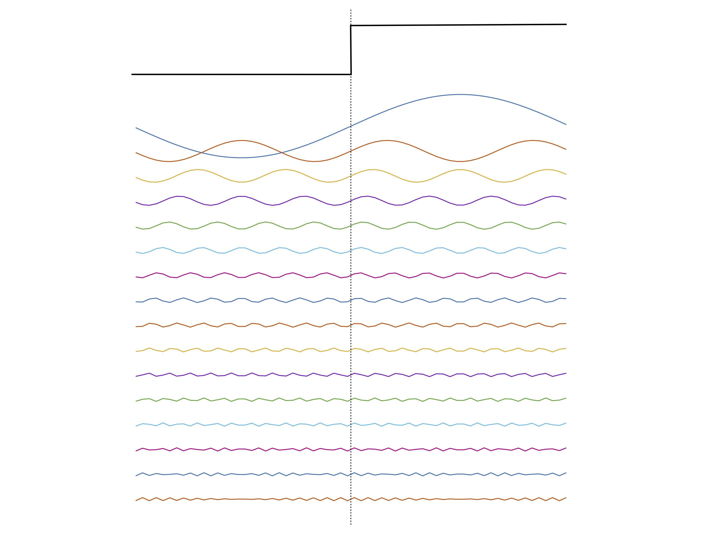
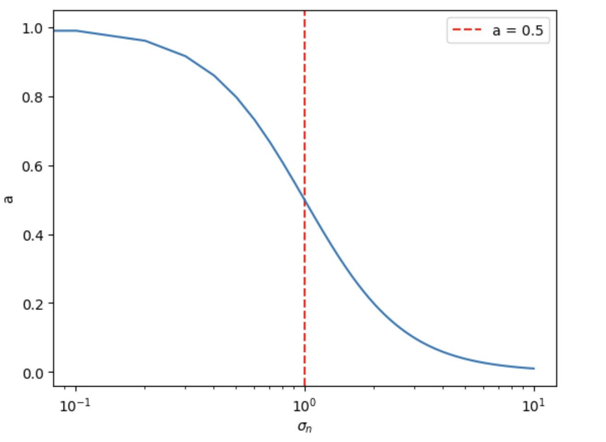
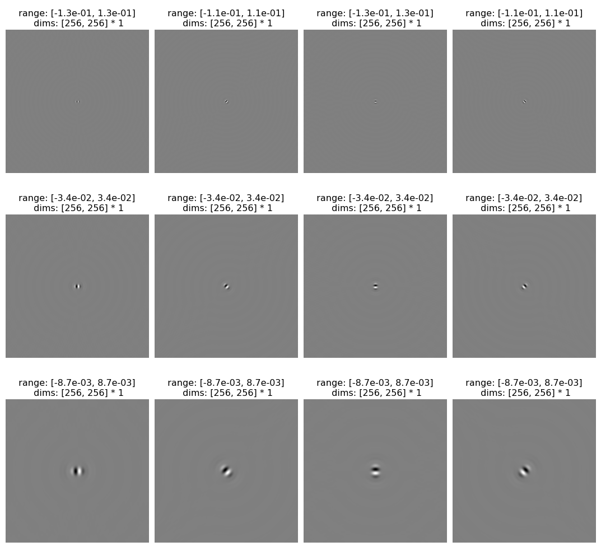
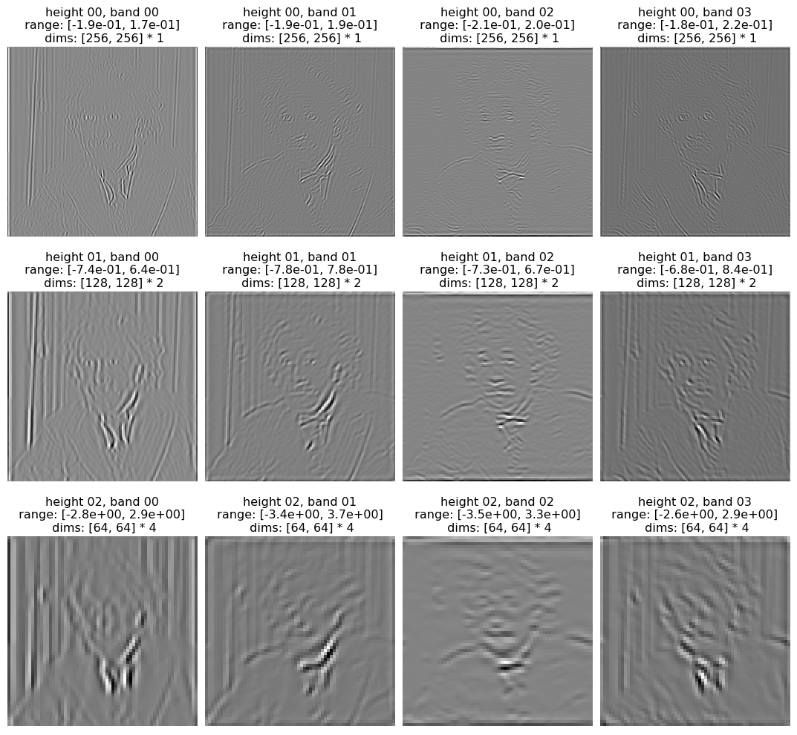
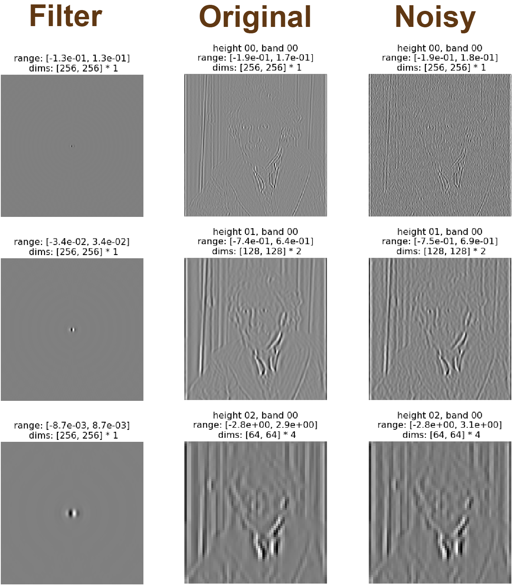
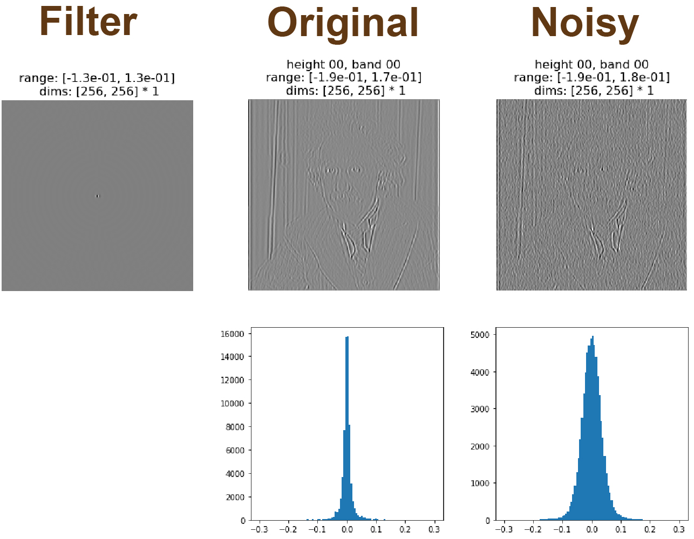
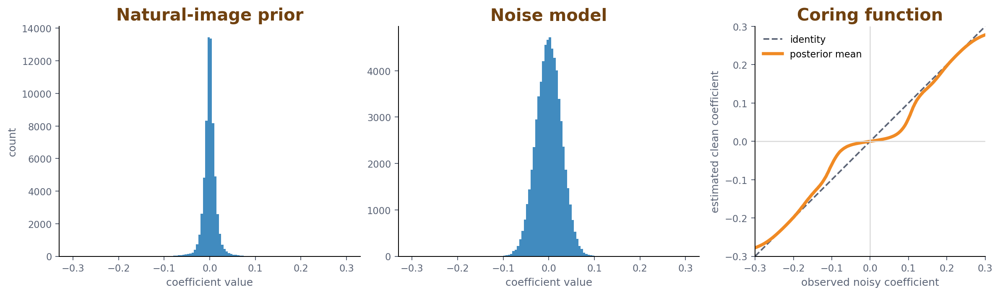
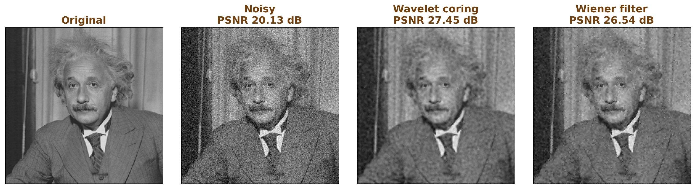

Natural Images can be denoised using what we know about natural scene statistics.
Namely, natural images have a 1/f2 power spectrum. Using this information as
our prior, we can use bayesian inference in order to denoise an image which has been
corrupted by gaussian noise. Using the same framework, we can also fill in an image
where 99% of the true pixel values are missing.
Introduction
This blog will introduce and demonstrate how to use natural image statistics in order to
denoise an image. The first part will explore the 1/f2 power spectrum of
natural images. The second part will discuss using bayesian inference in order to denoise
an image. The third part will implement Simoncelli et al.’s “NOISE REMOVAL VIA BAYESIAN
WAVELET CORING” in order to do denoising. The fourth part will discuss using gradient
descent with langevin sampling in order to denoise an image. The fifth part will
demonstrate filling in an image where a large percentage of pixels are missing.
What do we know about natural images? (1/f2 power spectrum)
Click here to expand Fourier transform explanationClick here to hide Fourier transform explanation
Fourier's theorem was first proposed in 1807 but
not published until 1822 due to the skepticism of many leading mathematicians who did not
think it could be true. Today, it provides the theoretical foundation for the Fourier
transform which is one of the most widely used tools in all of science and engineering,
from radio astronomy and signal processing to neuroscience and modern machine learning.
For example, it is used for:
analyzing the frequency content of natural signals such as sound waveforms.
detecting rhythmic activity in brain signals - e.g., EEG, LFP and spike train recordings.
even when there is no periodic structure - characterizing the length scale of correlations
over time or space, since the power spectrum is the Fourier transform of the auto-correlation
function.
identifying the input-output relationship of linear systems.
Here we will experiment with Fourier decompositions of simple 1D waveforms and 2D images,
to gain some intuition about what the Fourier transform tells you about a signal, and how
it can be used to manipulate images to demonstrate perceptual phenomena.
Fourier's theorem states that any continuous function
can be described as a weighted sum of sine and cosine waveforms at different frequencies:
where
and
are the weights of the sine and cosine components, respectively, and
is the frequency in
radians per unit of
(space or time). Alternatively if we define
we may rewrite the equation equivalently as
where now
is described simply as a sum of cosine waves, each with amplitude
and phase-shifted by
.
We refer to
as the amplitude spectrum and
as the phase spectrum of
.
To gain some intuition for the power and generality of the Fourier theorem, let us first
decompose a simple step-function this way. The function
is
You are given as a
discretely sampled function. In the image below you can see that even though
looks nothing like a sinusoid, we can nevertheless describe it perfectly by adding sinusoids
of different frequencies together, as long as they are given the correct amplitudes and phases.

A step function (black) reconstructed by summing sinusoids (colored) at increasing
frequencies.
The direct method of computing the amplitude and phase spectrum of a function
is the Fourier transform! Looking back at the Fourier theorem, we can compute the Fourier
coefficients
and
from the discretely sampled function
, as follows:
where
.
Intuitively, we can think of these equations as measuring the similarity between
and the sine function, and the similarity between
and the cosine function, for each frequency
.
Formally, we can show this gives us exactly the Fourier coefficients
and
in the Fourier theorem by plugging the expression for
into these equations and utilizing the orthogonality of sines and cosines of different
frequencies, or sine and cosine of the same frequency.
Once you have computed
and
,
the amplitude spectrum and phase spectrum can be computed via
and
.
A 2D image may also be described in terms of a Fourier decomposition as follows:
where
and
correspond to frequencies in the
and
dimensions of the image, respectively. Each sinewave component now corresponds to a 2D
grating of a specific spatial-frequency and orientation. You can use the demo below to
build up an image from its Fourier components, one component at a time.
Note how the amplitudes fall off with frequency. At some point, the amplitudes are so
small that the gratings are not even visible, yet they are clearly needed to reconstruct.
This seems paradoxical - gratings which are invisible in isolation nevertheless create
structure when combined. The squared amplitudes have a 1/f2[1] fall off relationship,
which is shown in the dashed line. This phenomenon of 1/f power spectra is not unique to
natural images — it occurs all throughout nature such as in music
[2].
Figure 1. An interactive Fourier buildup: reconstruct an image by adding one Fourier component at a time.
Top middle panel: The cumulative reconstruction of the image after adding each oriented
frequency component.
Top right panel: The component number i is the frequency component we are adding
and a is the amplitude. As i goes up, a will go down because we are adding
frequencies in descending order of amplitude. Each grating is weighted by its associated amplitude.
Only components up to ~i=150 are visible and after that the grating is too hard to see because
the amplitude is so low.
Bottom right panel: The grating shown with full contrast to make it easier to see for
visualization purposes.
Bottom middle panel: The power spectrum of the image. The y-axis is the squared amplitude
of the frequency component, hence the power spectrum. The x-axis is the frequency value. Note the
log-log plot.
Source: Python, MATLAB.
Bayesian denoising with a natural-image prior
If you want an incredible and easy-to-understand introduction to bayesian inference please read
this write-up
by Bruno Olshausen [3].
We will use bayesian inference in order to denoise images. Let’s begin with the following problem
set-up (copied from the handout
write-up[3]):
“A classic example of where Bayesian inference is employed is in the problem of estimation, where we must guess
the value of an underlying parameter from an observation that is corrupted by noise. Let’s say we have some
quantity in the world,
,
and our observation of this quantity,
,
is corrupted by additive Gaussian noise,
,
with zero mean:”
Our job is to make the best guess as to the value of
given the observed value
.
Let’s call our best guess
.
In this set-up, when
and
are both gaussian, there is a standard closed-form solution for
.
This is also known as the Wiener filter:
Now assume
and
.
Then
simplifies to the following form:
is an attenuation factor between 0 and 1.
varies with
as shown in the plot below:

Figure 2. Attenuation factor
as a function of
.
Now let's apply the same framework to the problem of denoising an image. We are given a noisy observation
of an image
as follows:
where
denotes the pixel position within the 2D image. Our task is to estimate
from
.
We could do this pixel by pixel, but since the signal and noise variance is the same for each pixel all it will
do is attenuate the entire image, which isn't very interesting. However if we transform to the frequency domain
we can exploit our prior knowledge about the statistics of natural images - namely, they have 1/f2
power spectra!
Letting
denote the Fourier transform of
,
we have
Since the Fourier transform is a unitary transformation (it is like multiplying by an orthonormal matrix),
the noise variance in the frequency domain is the same as it was in the space domain. But the signal variance
is now different for each frequency as it follows the 1/f2 power law:
We just need to set the constant of proportionality
so that the total signal power in the frequency domain equals the signal power in the space domain, which can
be accomplished via
We can then denoise the image frequency by frequency as follows:
where
is the attenuation factor computed from the signal and noise variance for each frequency. In this case, then
Examine the code below which implements the above equations and be sure you understand it. Try running it for
different amounts of noise to see how far you can go before the image is unrecoverable.
Figure 3. Wiener denoising in the frequency domain using a 1/f2 natural-image prior.
Wavelet Coring
In the previous section we used the Wiener filter to attenuate each frequency. In this section, instead of
modifying frequency content, we will take wavelet decomposition of the image and modify the wavelet coefficients.
This is a method developed by Simoncelli and Adelson in 1996
[4].
It relies on steerable pyramids
[5],
which is a method for decomposing an image. If you want a great explanation of steerable pyramids check out the
actively maintained pyrtools documentation page about steerable pyramids
[6].
Below is an example of the steerable pyramid decomposition. The left figure shows the filters and the right figure
shows the activations on the Einstein image for each of the filters.


Figure 4. Steerable pyramid decomposition.
Left: The steerable pyramid filters used for decomposition.
Right: The activations (filter responses) on the Einstein image for each of the filters.
You can see from the figure above that the decomposition separates the image by both
scale and orientation. The top row responds to the highest frequencies, the middle row
responds to medium frequencies, and the bottom row responds to lower frequencies.
I am going to follow the implementation style from Professor Rob Fergus' computational
photography assignment
[7].
To keep the picture simple, focus on one orientation band: the first column below, which
is most sensitive to vertical edges. The first column shows the filter, the second column
shows the filter output for the clean Einstein image, and the third column shows the same
output after adding Gaussian noise with
.
Notice that the highest-frequency band is much more corrupted by the noise than the
lower-frequency bands.

Figure 5. Filter outputs comparison.
Left: Filter reference.
Middle: Filter outputs for original uncorrupted image.
Right: Filter outputs for image corrupted with gaussian noise.
Now focus only on the highest-frequency band. The clean image has a sharply peaked
coefficient distribution: most coefficients are close to zero, but a few large coefficients
correspond to real edges. Adding Gaussian noise spreads this distribution out. Wavelet
coring uses this difference in distributions to decide which noisy coefficients should be
suppressed and which should be kept.

Figure 6. Distribution comparison of highest frequency filter outputs.
Top row: Filter outputs (same as top row from Figure 5).
Bottom row: Histogram distributions showing the original has a more sharply peaked distribution at the center compared to the noisy version.
The Bayesian version of coring starts with the same scalar observation model we used
before, but now
is a clean wavelet coefficient and
is the noisy coefficient:
The least-squares optimal estimate is the posterior mean,
.
By Bayes' rule this can be written as
Here
is the noise distribution and
is the prior distribution of clean coefficients. If both are Gaussian, this reduces to a
linear Wiener-style shrinkage. But natural-image wavelet coefficients are not Gaussian:
they are sharply peaked at zero with heavy tails. That changes the posterior mean into a
nonlinear coring curve. Small observed coefficients are pulled toward zero because they
are likely to be noise, while large coefficients are mostly preserved because they are more
likely to be real image structure.

Figure 7. The coring function used in the implementation.
Left: An empirical prior from clean natural-image wavelet coefficients.
Middle: The corresponding noise coefficient distribution.
Right: The posterior-mean estimator for a representative finest-scale
oriented band. Compared to the identity line, it suppresses small coefficients and
preserves larger coefficients.
In the code, this posterior mean is estimated directly from
histograms. The implementation cores the residual highpass band and the four finest
oriented bands. For each band, the denominator is the convolution
of the clean-coefficient histogram with the noise histogram, which gives the distribution
of noisy observations. The numerator is the same convolution after weighting the clean
coefficients by their value. Dividing the two gives a lookup table
that is applied to every coefficient in that band. After coring the high-frequency bands,
the steerable pyramid is reconstructed back into an image.

Figure 8. Wavelet coring denoising result generated from the same
computation as the implementation, with a fixed random
seed for reproducibility. For this noise sample, coring improves the noisy image from
20.13 dB to 27.45 dB PSNR, slightly above the local Wiener filter baseline.
Gradient descent + Langevin sampling
The Wiener filter gave us the posterior mean directly. Another way to use the same
posterior is to move an image estimate downhill on the negative log posterior. In
the implementation, the prior term is still the
1/f2 natural-image prior, so high frequencies are penalized more strongly
than low frequencies.
The update is done in the Fourier domain. Let
be the current estimate and
be the noisy observation. The code uses the gradient of the quadratic posterior energy,
preconditions each frequency by its curvature, and optionally adds Langevin noise:
When
,
this is just gradient descent toward the MAP estimate. When
,
the injected noise turns the procedure into Langevin sampling, so the estimate jitters
around plausible images under the posterior instead of collapsing to only one optimum.
Figure 9. Gradient descent + Langevin sampling demo with a 1/f2 prior.
Filling in images with missing pixels
The inpainting demo uses the same prior, but changes the likelihood. Some pixels are
observed and must stay fixed; the rest are unknown. In
the implementation, the mask keeps a small fraction of
pixels (2% by default in the web demo) and shows the missing pixels in blue.
Since the known pixels are already constrained by the data, the update only changes the
missing pixels. At each step, the code computes the gradient of the 1/f2
prior energy by transforming the current image to the Fourier domain, multiplying by
,
transforming back, and stepping downhill only where the mask is missing:
This is why a recognizable image can emerge from very few pixels: the observed pixels
anchor the solution, while the 1/f2 prior fills in the missing values with a
power spectrum that looks like a natural image.
Figure 10. Inpainting by updating missing pixels under a 1/f2 prior.
Discussion
The common thread through all of these examples is that natural images are highly
structured. A simple 1/f2 power-spectrum prior already gives useful denoising
and inpainting behavior, and the Bayesian framing tells us exactly how to combine that
prior with noisy or incomplete observations.
The Fourier-domain methods are deliberately simple: they capture the average falloff of
power with frequency, but not the localized edge structure of images. Wavelet coring adds
one important piece of that structure by using the sparse, heavy-tailed statistics of
steerable-pyramid coefficients. This is why it can preserve edges while suppressing
small noisy coefficients.
These methods are not meant to be the final word on image restoration. Their value is
that they make the assumptions visible: choose a prior, write down the observation model,
and then compute or sample from the posterior. That is the same basic logic behind many
more powerful modern methods, even when the prior is learned rather than hand-specified.
Acknowledgments
I recently served as the GSI for UC Berkeley's NEU 172L: Cognitive and Computational Lab. This is a brand new course,
taught for the first time in Fall 2025. The goal of the course is to introduce students to the experimental and
analytical techniques used by cognitive and computational neuroscientists. It was taught by
Frederic E Theunissen,
Michael Silver, and
Bruno Olshausen.
I had the pleasure of helping to develop some of the labs that were taught during the course. Part of Bruno's labs
were built to teach students about the Fourier transform and Bayesian inference. The content and code in this write-up
were initially developed for the course's labs. I had an incredible time building these labs and teaching them to the
students, which is what motivated me to make this write-up. I also had the privilege of learning a lot of this content
one-on-one from Bruno and I would like to sincerely thank him for his time and patience to teach me everything.
I would also like to thank my Co-GSI Carolyn Irving for being an amazing teammate and also helping develop the labs
that eventually became a part of this write up. Finally, I would like to thank the Berkeley Neuroscience Department
for giving me the opportunity to GSI NEU 172L and funding me for Fall 2025.
For attribution in academic contexts, please cite this work as
Kothapalli, T., & Olshausen, B., "Denoising Images with Natural Scene Statistics", 2026.
BibTeX citation
@article{kothapalli2026denoising,
author={Kothapalli, Tejasvi and Olshausen, Bruno},
title={Denoising Images with Natural Scene Statistics},
year={2026},
url={https://tejasvikothapalli.github.io/blogs/denoising/}
}
References
Field, D. J. (1987). Relations between the statistics of natural images and the
response properties of cortical cells. Journal of the Optical Society of America A,
4(12), 2379–2394.
[link]
Voss, R. F., & Clarke, J. (1978). “1/f noise” in music: Music from 1/f noise.
The Journal of the Acoustical Society of America, 63(1), 258–263.
[link]
Olshausen, B. A. (2004). Bayesian probability theory. The Redwood Center for Theoretical Neuroscience,
Helen Wills Neuroscience Institute at the University of California at Berkeley, Berkeley, CA.
[link]
Simoncelli, E. P., & Adelson, E. H. (1996, September). Noise removal via Bayesian wavelet coring.
In Proceedings of 3rd IEEE International Conference on Image Processing (Vol. 1, pp. 379–382). IEEE.
[link]
Simoncelli, E. P., & Freeman, W. T. (1995, October). The steerable pyramid: A flexible architecture for multi-scale derivative computation.
In Proceedings, International Conference on Image Processing (Vol. 3, pp. 444–447). IEEE.
[link]
Simoncelli, E., Young, R., Broderick, W., Fiquet, P. É., Wang, Z., Kadkhodaie, Z., ... & Ward, B. (2024, July).
Pyrtools: tools for multi-scale image processing.
[link]
Fergus, R. Computational Photography. New York University, Department of Computer Science.
[link]